Technology Consultant - Toronto, Canada
I turn complex problems into practical systems.
A focused look at the transformation work, product judgment, and technical builds I can bring to a team.
Consulting anchor
Capco work across banking transformation.
I support transformation teams by turning stakeholder input into requirements, process flows, runbooks, readiness plans, dashboards, and implementation handoff materials.
Business Systems Analyst - Tier-1 Global Bank
CCaaS Migration
Led requirements gathering and current-state analysis for a cloud contact center migration.
- Identified legacy contact center pain points
- Defined business needs and technical specifications
- Created 10+ future-state user journeys
Experience trajectory
A trajectory across consulting, product, growth, and systems.
Each role added a different layer to how I work: enterprise delivery at Capco, growth strategy at PepsiCo, product delivery at Electro Source, emerging tech at Accenture, and automation in operations.
2021 - Present
Enterprise transformation
Capco
Technology consulting across banking transformation, requirements, cutover, process design, and automation.
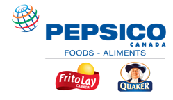
2021
Growth strategy
PepsiCo Foods Canada
Coordinated 10+ stakeholders and tied UI and campaign work to 30% and 20% sales lift outcomes.
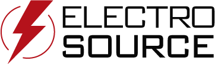
2020
Product delivery
Electro Source
Owned MVP delivery for a remote collaboration product through demos, roadmapping, and four two-week sprints.
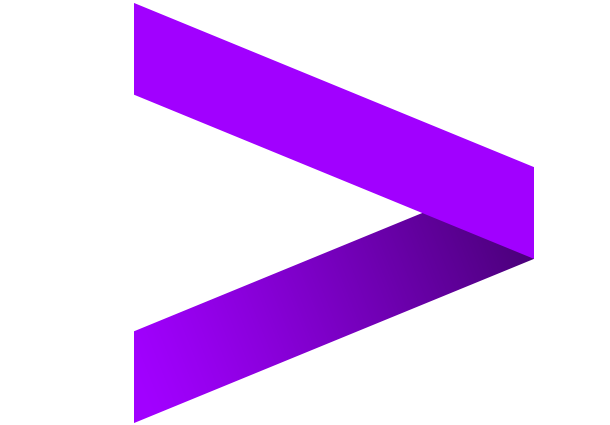
2019
Emerging technology
Accenture
Built product authentication concepts using Hyperledger Fabric, React Native, AWS Cognito, and AWS IAM.
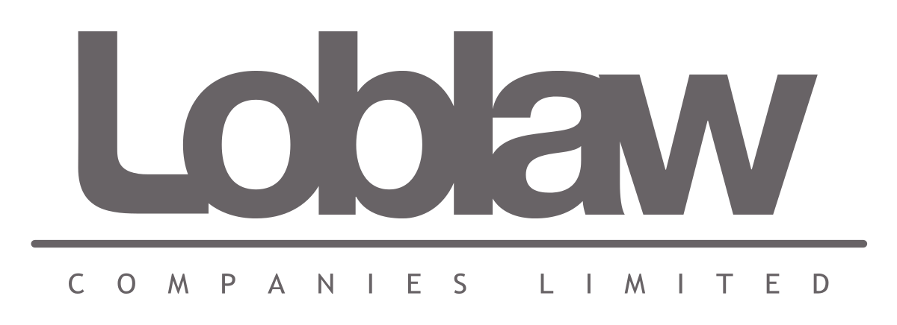
2019
Operations innovation
Loblaw
Investigated recurring million-dollar pallet tracking losses and delivered an on-site tested IoT prototype.
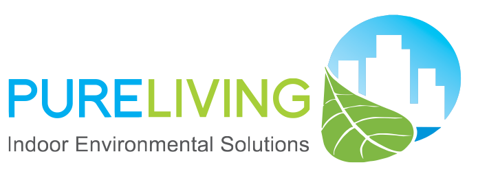
2018
Automation proof
PureLiving China
Built a VBA automation tool that improved transaction processing efficiency by roughly 1600%.
Selected projects
Projects grouped by what they demonstrate.
A mix of shipped products, AI tools, dashboards, and automation work that shows how I move from problem definition to working systems.
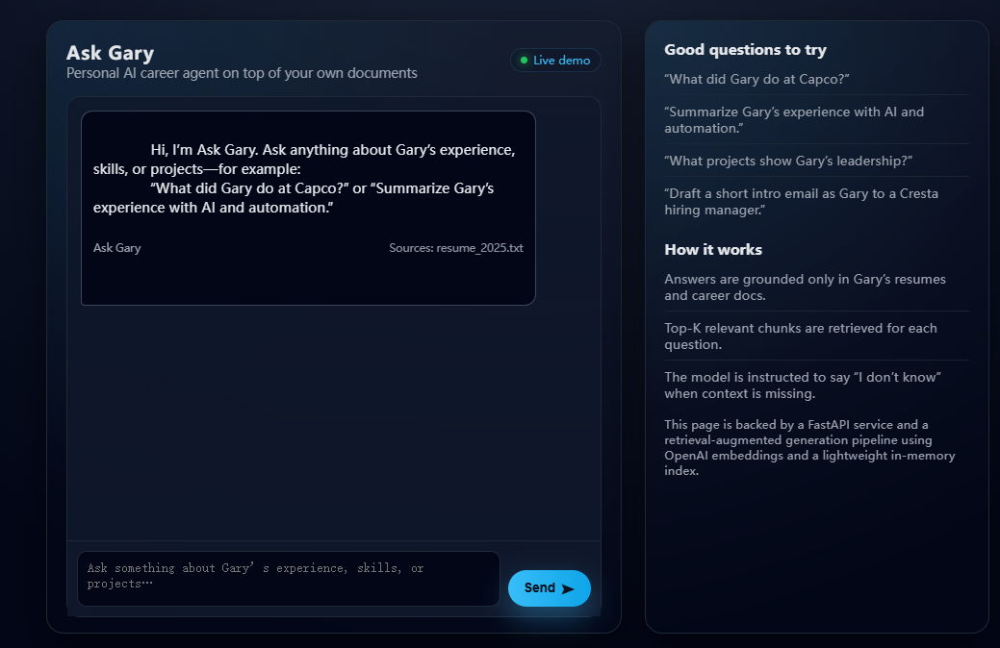
AI career assistant
Ask Gary
Retrieval-augmented AI chatbot that answers career questions from resume, LinkedIn, hobbies, and projects.
- FastAPI, Python, OpenAI, vector search, Vanilla JS.
- Deployed with EC2 backend and S3 static site.
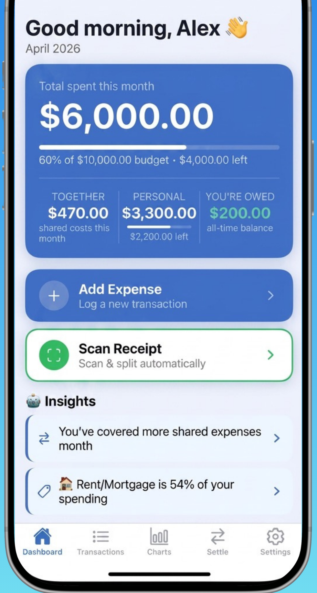
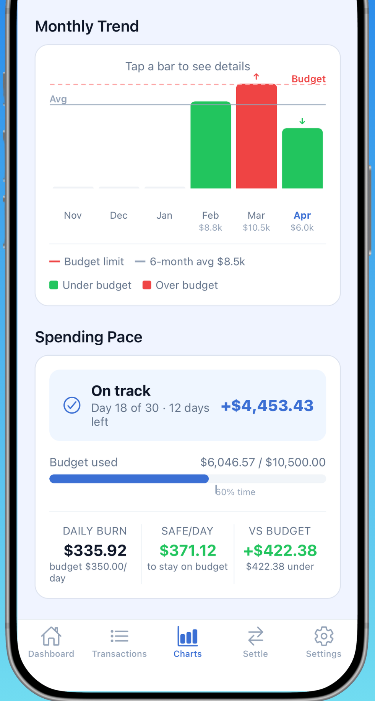
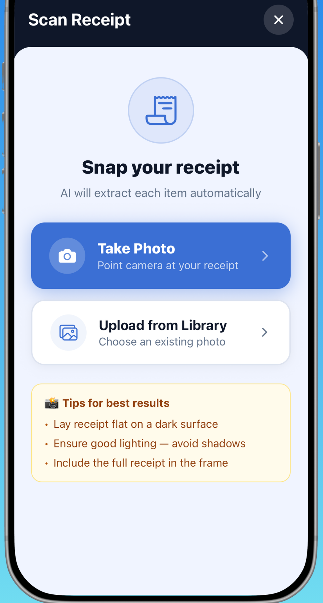
Shared expense product
Flowt
iPhone app for couples and roommates to track shared expenses, scan receipts with AI, understand spending trends, and settle balances.
- Expo/React Native product with household expenses, budgets, charts, and settlements.
- AI receipt scanning, Flowt Pro subscription surface, and App Store-ready product assets.
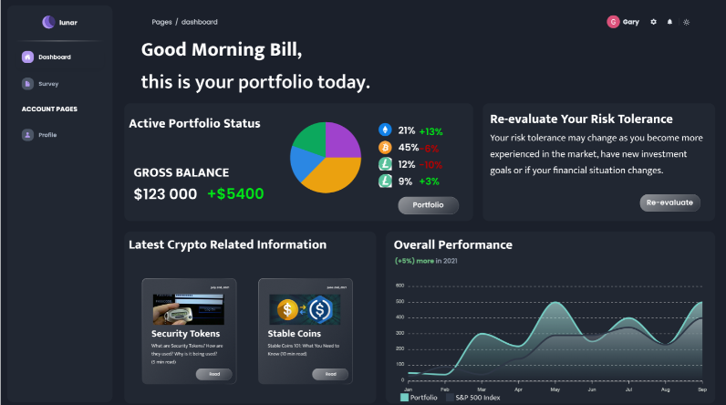
Capstone product
Lunar
Deployed crypto portfolio management platform led as project manager and UI/UX designer.
- Team of five, seven stakeholders, three design revisions.
- User surveys, interviews, journeys, and retros.
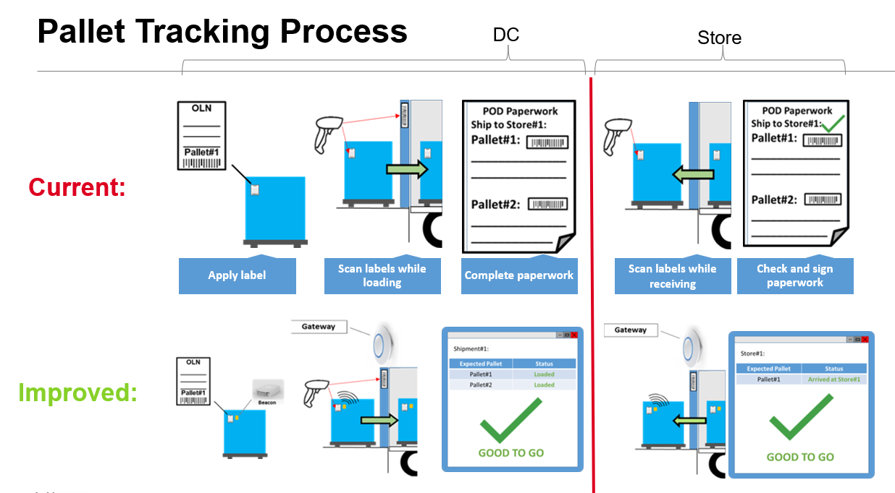
Operations automation
Pallet Tracking
IoT/BLE prototype addressing a recurring million-dollar logistics loss.
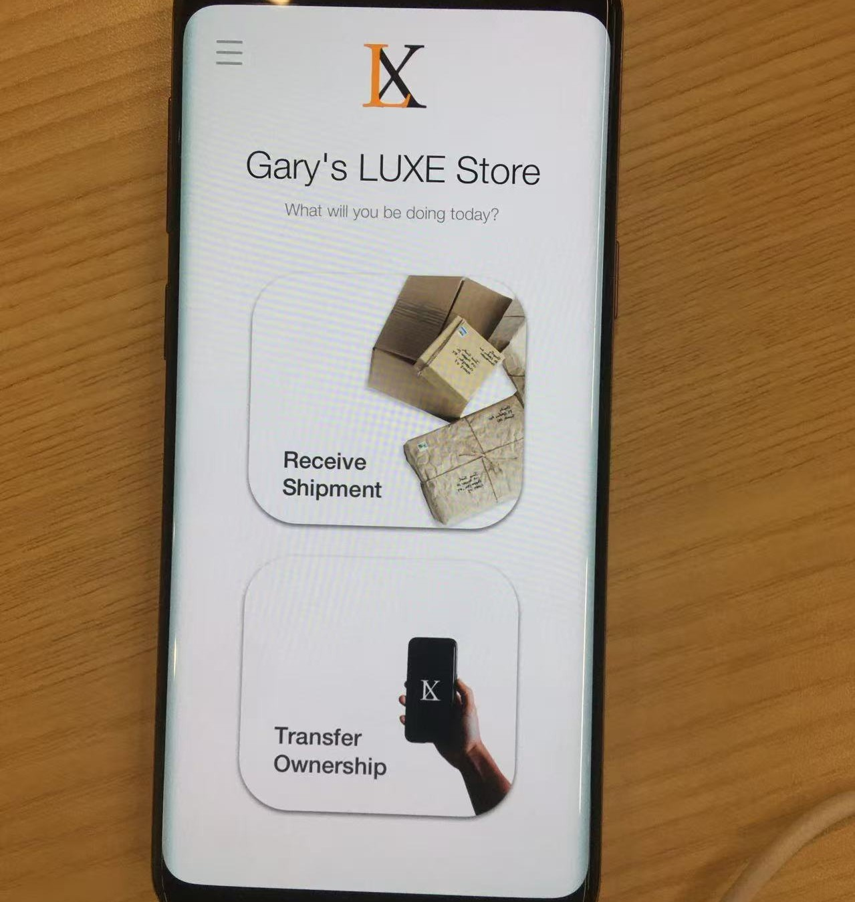
Blockchain product
Product Authentication
Hyperledger Fabric and AWS authentication concept from Accenture Liquid Studio.
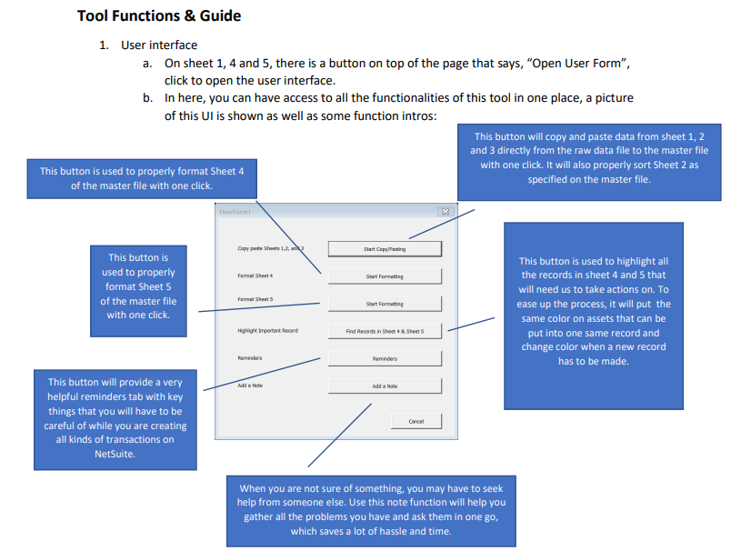
Process automation
ERP Automation
Excel VBA tool reducing weekly transaction processing from 4 hours to about 15 minutes.
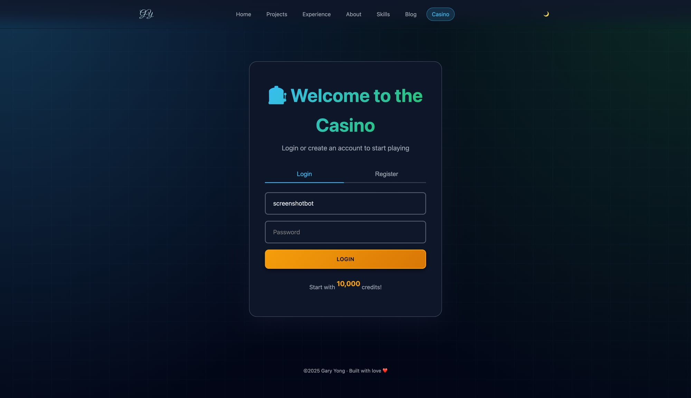
Real-time web app
Mini Games
Mobile-first multiplayer party game platform using Node.js and Socket.io.
Capability map
Where I fit on a transformation team.
My strongest value is bridging business context and technical execution: I can help clarify the problem, shape the delivery path, and build enough proof to make the work real.
01
Understand the system
Stakeholders, domain context, process gaps, requirements, and current-state analysis.
02
Shape the delivery path
User journeys, runbooks, roadmaps, workshops, readiness planning, and stakeholder alignment.
03
Build useful proof
Dashboards, automation tools, AI assistants, finance apps, APIs, and web prototypes.
01
Consulting and domain
CCaaS transformation, banking and finance, wealth management, retail banking, commercial banking, reconciliation automation.
02
Product and delivery
Requirements gathering, process mapping, user journeys, Agile/Scrum, workshop facilitation, stakeholder management, cutover planning.
03
Technical build
JavaScript, TypeScript, HTML/CSS, Python, SQL, REST APIs, AWS EC2, AWS S3, AWS Cognito, IoT/BLE.
Proof points
Ask Gary
Flowt
Lunar
ERP Automation
Let's connect
Are you looking for talent with this set of capabilities?
If consulting delivery, product thinking, and technical build experience are useful for your team, reach out to me.